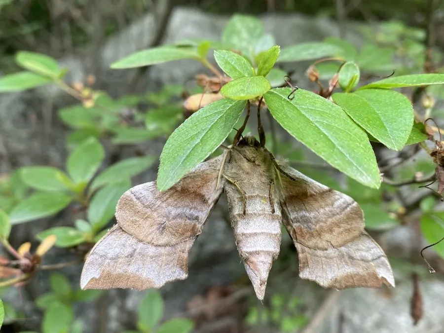

昆虫 · 动物界
蓝目天蛾 Smerinthus planus

后翅中央有一枚蓝色眼斑的灰褐色天蛾，幼虫取食杨、柳和苹果叶片，是中国北方园林与果园的常见蛾类。
- 分类
- 门节肢动物门纲昆虫纲目鳞翅目科天蛾科属目天蛾属
- 栖息环境
- 杨树、柳树成片的河岸、行道树、果园和林缘
- 地理分布
- 中国大部分地区，以及日本、朝鲜半岛和俄罗斯远东
- 保护级别
- 尚无保护级别；为杨柳树上的常见食叶害虫
物种志
蓝目天蛾的翅展约七至八厘米，前翅灰褐色，密布深浅相间的波状横纹，顶角附近有一块深色斑，后翅中央偏基部有一枚醒目的眼斑，斑心蓝黑、外圈镶黑与淡黄，像一只睁开的蓝眼睛，蓝目天蛾之名由此而来。它的身体粗壮，灰褐色，腹部两侧有淡色斜纹，触角呈羽状，成虫口器退化，不能取食。
它分布于中国大部分地区，以及日本、朝鲜半岛和俄罗斯远东，栖息在杨树、柳树成片的河岸、行道树、果园和林缘，成虫夜间活动，有趋光性，白天停歇在树干或枝叶间，受惊时会抖开前翅露出眼斑。幼虫以杨、柳、苹果、桃等植物为食，卵单产于叶片背面，幼虫取食叶片，老熟后入土化蛹，一年发生一至两代，以蛹越冬。它是杨柳树上的常见食叶害虫，尚无保护级别，主要靠人工捕杀和灯光诱杀控制。
形态与习性
- 翅展约七至八厘米，前翅灰褐有波状横纹
- 眼斑后翅中央一枚，斑心蓝黑、外圈镶黑与淡黄
- 食性幼虫取食杨、柳、苹果、桃的叶片
- 成虫口器退化不取食，夜间活动，有趋光性
- 防御受惊时抖开前翅露出眼斑
- 发生世代一年一至两代，以蛹在土中越冬
趣味知识
- 后翅上那枚蓝心黑圈的眼斑，是它吓退鸟类的主要手段。
- 成虫羽化后根本不吃东西，口器已经退化成一小截痕迹。
- 它白天贴着树干休息，灰褐色的翅纹和树皮几乎融成一体。